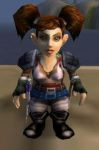

Age : 25
Sexe : Femme
Race : Gnome
Faction : Alliance
Formation : Voleur
Description : Cherrylinoa est partie de la vallée pour découvrir le monde. Elle est très généreuse, curieuse de tout et très proche de la nature.
Age : 18
Sexe : Femme
Race : Troll
Faction : Horde
Formation : Chaman
Description : Kléophis a quitté Durotar pour défendre les terres de Kalimdor contre la menace des Réprouvés et pour freiner les ardeurs de l'Alliance.